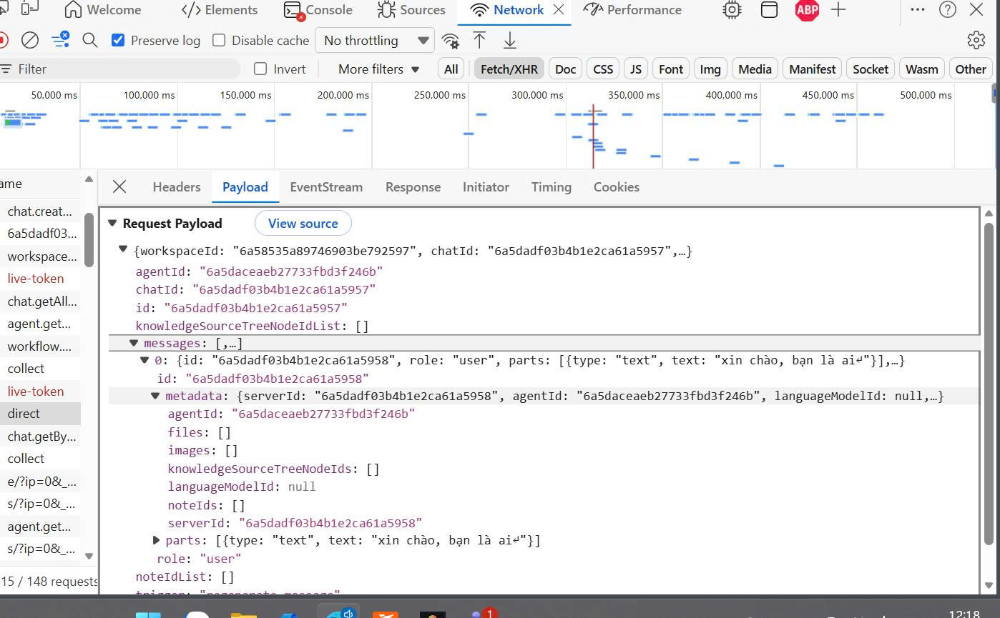
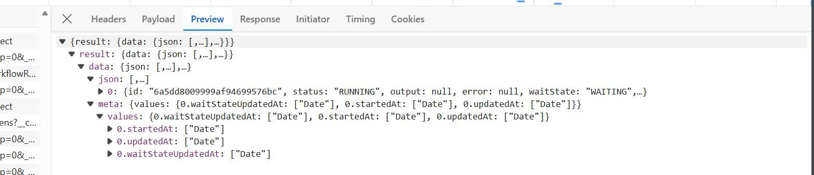
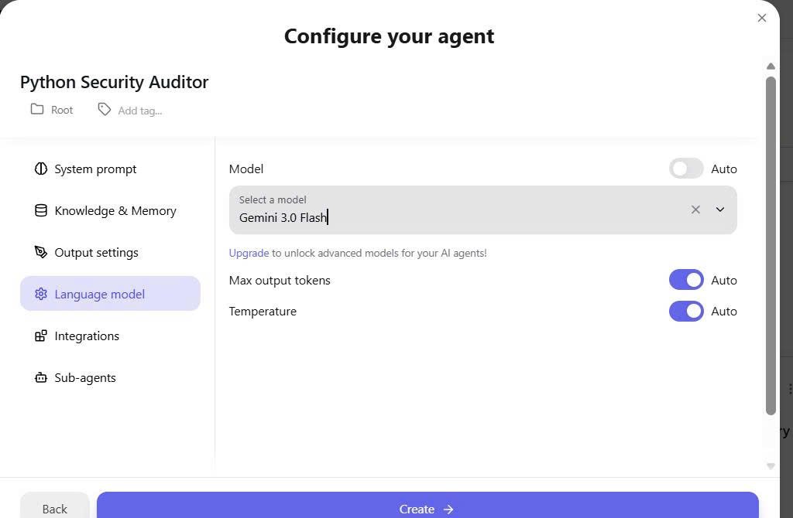
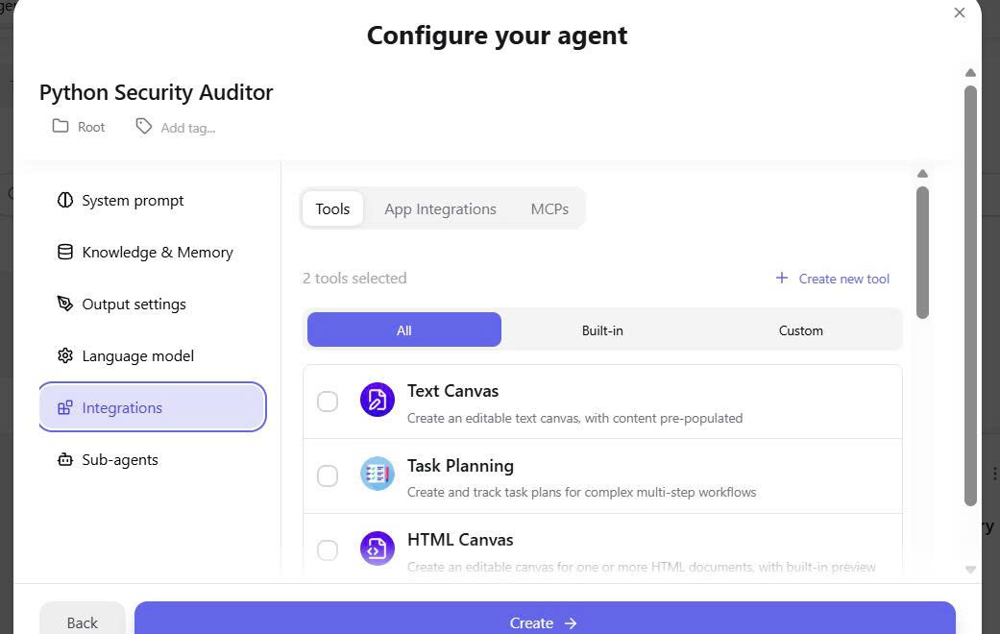
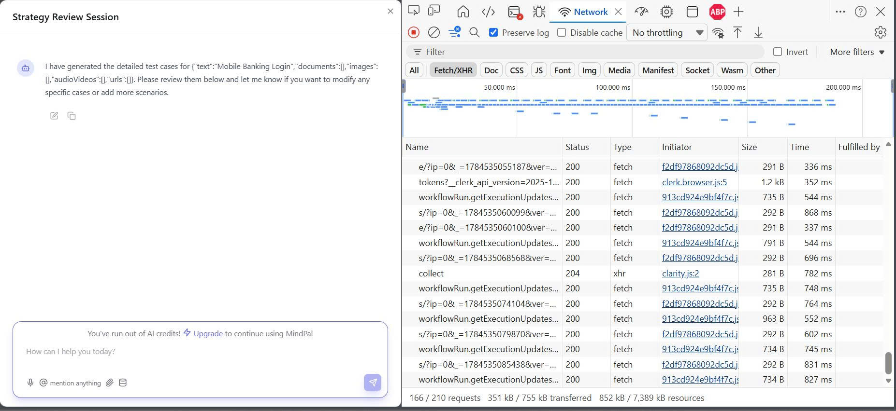

How MindPal actually runs an agent, seen only from the outside
Day 2 mapped what MindPal is. Day 3 goes one layer down: what happens the moment you hit Run. No source code — every claim is read off live network traces, decoded payloads and error states, then cross-checked against the public docs.
What happens when you hit Run
Follow one message end to end. The client barely does anything — the real work happens server-side, and how the answer comes back depends on what you ran.
📡 SSE stream — chat & single agent
POST /api/workflows/agent-run/directThe answer streams back token by token over one held-open connection. Used when a human is watching a live reply. Fast first byte.
🔄 Polled job — full workflow
workflowRun.getExecutionUpdatesThe run becomes a background job; the client re-queries every few seconds. It has to — a workflow can sit paused at a human step for minutes or hours.
Those transports are how it answers — here's how you launch it
The harness, in five layers
Two phases share one engine. Authoring turns a sentence into a declarative JSON graph; execution runs it server-side as a durable state machine the client polls.
The workflow you actually build
This is a real 6-node workflow Mindie generated from one sentence — and it uses six different node types. Each is a link in the orchestration chain; the colours mark what kind of work each does.
Requirements
Collect project & scope from a person
Validation
An LLM judges: CONTINUE or STOP
Strategy
Planner delegates to 2 worker agents
Test cases
Runs once per category (map/foreach)
Review
Pauses for a human to refine
Report
Synthesises the master test plan
Two node types hide a real agentic loop
Most nodes call the LLM once and move on. Two of the ~16 node types run a genuine reasoning loop inside a single step — this is where the orchestration stops being a straight line.
🎯 Orchestrator-Worker
A planner breaks the task into subtasks and delegates to a fixed team of worker agents chosen upfront, then synthesises their results. Dynamic planning over a static pool.
♻️ Evaluator-Optimizer
An executor drafts, an evaluator scores it against criteria, and it loops — draft → critique → revise — until it passes or hits a max-iteration cap. A real reflection loop.
It pauses — and proves it
A workflow run isn't a script that finishes in one shot. It's a job with saved state that can stop, wait for a human, and resume. One field in the poll response gives it away.
waitState is the only way a run can pause for
minutes or hours and pick up where it left off. Human-in-the-loop isn't bolted on — it's a first-class state.The stack, read off the wire
None of this is documented. Each value is grounded in a captured request, a header, an ID format or an SDK signature.
One request, decoded
The most honest evidence is the raw payload. Here's what the browser sent to run the agent — and what four fields quietly reveal.
Memory comes in three tiers
"Does the agent remember?" turns out to be three separate questions with three separate mechanisms — each visible in the config or the payload.
Run variables
Output of one node feeds the next by reference. Dies when the run ends.
Working notes
The agent can autonomously jot notes to itself and reuse them as scratch memory.
Knowledge (RAG)
Uploaded docs are embedded and semantically searched — but only when relevant by default.
The receipts
Nothing above is taken on faith — these are the raw captures each claim was read from. Click any to open it full size.





Hypotheses & evidence
Every inference, grouped by the question it answers, each tagged with the observation behind it and how strongly the evidence backs it.
| # | Hypothesis | Evidence | Confidence |
|---|---|---|---|
| Orchestration loop | |||
| H1 | Workflows are a declarative DAG walked sequentially by Edges. | JSON spec has Nodes[] + Edges[]; runtime splits 1 run into ordered executions. | High |
| H2 | Agent & workflow share one engine — an agent is a workflow of one node. | Single-agent chat POSTs /api/workflows/agent-run/direct. | High |
| H3 | The engine is a durable, suspendable state machine with per-node wait-states. | status:"RUNNING", waitState:"WAITING"; reconcileWaitState; runId ≠ executionIds[]. | High |
| H4 | Orchestrator-Worker = a planner delegating to a fixed, pre-defined worker pool. | OrchestratorAgent + static WorkerAgents[] array in the spec. | High |
| H5 | Loop is a map/foreach over a prior node's output; parsing prose into items is a fragility point. | LoopNode.listSource → prior node output, listItemName, per-item agent. | Medium |
| H19 | Real agentic loops live inside two specialised nodes, not the top-level DAG: Orchestrator-Worker (plan→delegate→synthesise) and Evaluator-Optimizer (draft→critique→revise). | docs: Evaluator-Optimizer "repeats until all criteria satisfied or a max iteration limit"; workers "chosen upfront". | High |
| Tool interface | |||
| H6 | LLM calls run through the Vercel AI SDK with native function-calling. | Payload uses AI-SDK messages:[{role,parts:[{type,text}]}] shape; SSE streaming. | High |
| H7 | Tools are wired via Composio, MCP and built-ins — not hand-written per integration. | Integrations tab has three sub-tabs: Tools · App Integrations · MCPs. | High |
| H8 | Built-in agentic tools let one agent plan & track multi-step work. | Built-in "Task Planning" ("create and track task plans"), Canvas tools. | High |
| Context & memory | |||
| H9 | Two binding modes: agents by-reference (agentId), workflows inline-snapshot at save. | Chat payload carries agentId only; workflow JSON embeds full system prompts. | High |
| H10 | Long-term memory is RAG; retrieval is relevance-gated by default. | Knowledge Sources embedding step; "Force always get context" toggle defaults OFF. | High |
| H11 | A third memory tier: agent-authored "notes" as working memory. | Toggle "autonomously take notes as working memory"; payload field noteIds[]. | High |
| H12 | Human-input values are multimodal objects; the reference resolver can leak the raw object. | Chat node rendered {"text":"Mobile Banking Login","documents":[]…} where only text was expected. | High |
| H20 | Structure is lost between nodes — complex outputs are flattened to strings, which is exactly what makes the resolver leak raw objects (H12). | docs: Code Node — complex Orchestrator/Loop/Gate outputs "simplified into a string representation"; inputs "treated as strings". | High |
| Guardrails | |||
| H13 | Guardrails are agentic: a Gate is an LLM-as-judge emitting CONTINUE/STOP — non-deterministic. | GateNode contains an Agent whose system prompt says "Decide CONTINUE or STOP". | High |
| H14 | No build-time validation — Mindie can emit broken references that pass review unchecked. | Generated ref f-stack vs actual field f-tech-stack; "ready to save" regardless. | High |
| H15 | No built-in moderation layer — control is user-configured plus AI-credit cost metering. | "Brand voice" output shaping; "You've run out of AI credits" hard stop. | Medium |
| Human-in-the-loop | |||
| H16 | Three HITL mechanisms: Human Input node, Chat node, Supervised mode — at both build & run time. | Node types in spec; Supervised run tab; workflow paused at Chat node with waitState:"WAITING". | High |
| Model backend | |||
| H17 | A server-side "Auto" router over a multi-provider proxy — the client never names the model. | payload languageModelId:null yet UI resolves to Gemini 3.0 Flash; calls hit *.mindpal.space. docs list ~7 providers/20 models, default GPT-4o Mini — yet Auto picks Gemini 3.0 Flash (not even in the manual list), so Auto is a real router. | High |
| H18 | Mindie emits <background_information>… everywhere, yet the resolved model is Gemini Flash — format ≠ backend. | Corrected | |
What the evidence implies
Reading the harness as a set of deliberate choices — the same outside-in method as Day 2, one level deeper.
The workflow engine is durable, not a one-shot script
Runs are jobs with per-node records the client polls — not a request that returns when done.
Why it matters: a suspend/resume state machine is the only architecture that lets a run pause at a human step for minutes or hours. Human-in-the-loop is a first-class state.
Model choice is a backend decision, exposed as "Auto"
The client sends languageModelId:null; the server resolves and only then reports the model.
Why it matters: MindPal can swap models, tier access and control cost centrally without touching a saved agent — the tradeoff is the user cedes model control by default.
Guardrails are LLM calls, not rules
A Gate node is literally an agent that answers CONTINUE or STOP — and no build-time validator catches Mindie's broken references.
Why it matters: flexible and fast to build, but non-deterministic. Safety and correctness are pushed onto the user's prompts and review.
One engine, two transports, on purpose
Interactive chat streams over SSE; long workflows run as polled background jobs — both through the same
/api/workflows surface.
Why it matters: unifying agents and workflows behind one execution model keeps the product coherent while matching each transport to how long the work takes.